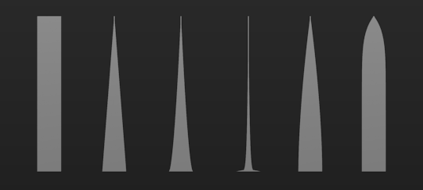
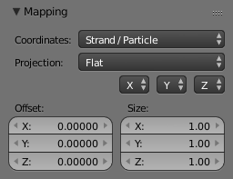

Strands¶
The Strand section of the Material tab is specific to the rendering of Hair particles. There are two different strand methods available:
- Polygon strands
- This is the default (old) method. The strands are rendered as flat polygons. The number of polygons depend on the Steps settings in the Particles system tab.
- Strand Primitive
- You activate Strand Primitive with the button Strand render in the Render panel of the particle system. The hair curves are not stored as polygons; only the key points are stored, which are then converted to polygons on-the-fly. A second difference is the way transparency works. Rather than rendering using the existing system, all strand segments in a part are sorted front to back and rendered in that order.
Strand Primitives
- Are more memory efficient and faster, to make rendering of large amounts of fur and grass possible. For good performance, the render steps button should be lowered (e.g. 2 should be good enough fur), since the result will be a smoothed curve anyway. You need 1 to 2 render steps less than steps in the 3D View. Also, using more render parts helps to reduce memory usage.
- Have a distance of vision reduction (in the Render panel under Child Simplification) for children from faces.
- May be faded out towards the tip without an additional texture.
- Are not ray-traced. So they are not visible through ray-transparent materials or in a ray mirror (you can use Environment Mapping for that).
- Have shape problems if they are rendered with a greater width.
- Cannot carry a UV texture along the strand.
Polygon strands
- Work well with greater width, so you can use them as an alternative to billboards because the strands may have an animated shape.
- Can be textured with a UV texture along the strands.
- Are seen by ray tracing.
Strands Shading¶
Strands panel.
Strands are rendered with the material of the underlying face/vertex, including shading with a UV texture. Since you can assign more than one material to each face, each particle system may have its own material and the material of the underlying face can be different from the material of the strands.
Additionally strands can be shaded along the strand (from root to tip) with a mono-dimensional texture; only polygon strands can carry a two-dimensional UV texture.
The options for strand shading are in the Strands section of the Material tab.
- Root
- Width of the hair at the root.
- Tip
Width of the hair at the tip.
- Minimum
- This is the minimum thickness (in pixels) of the strands. Strands below that size are not rendered smaller, but are faded to alpha (well, the fading works only for strand primitives). This gives a much better rendering result for thin hair.
- Blender Units
- Normally strands are quite thin; the thickness is given in screenpixels. If you use Blender units (BU) you may set the root value up to 2 BU, and the tip value up to 1 BU. You have to consider the overall object size, because the smallest possible size is 0.001 BU. So if you use 1 BU for 1 meter the smallest possible size would be 1 mm (too thick for thin hair).
- Use Tangent Shading
- Calculates the light as if the strands were very thin and round. This makes the hair appear brighter and shinier. Disabling the "Tangent Shading" option will still render nicely, but resembles more solid strands, as though made of metal or wood.
- Shape
This slider allows you to control the interpolation. Default (0.0) is a linear interpolation between Root and Tip. A negative value will make the strand narrower (spiky), a positive value will make it thicker.
Various Shape settings.
From left to right, 0 (root and tip are equal in the first), 0, -0.4, -0.9, 0.4, 0.9.- Width Fade
- To fade out along the width of the strand. This works only for Strand Primitives. 0.0 is no fading at all, 1.0 linear fading out.
- UV Map
- You can texture polygon strands with a UV texture. Fill in the name of the UV map (not the texture) here. You also have to load the texture in the Texture tab and Material tab (Mapping: UV; you may use every Influence setting you like -- especially the alpha value; see Fig. Various Shape settings.).
- Surface Diffuse
Computes the strand normal, taking the normal at the surface into account. This eases the coloring and lighting of hair a lot, especially for Strand Primitives. Essentially hair reacts similar to ordinary surfaces and do not show exaggerated strong and large specular highlights.
- Distance
- The distance in Blender units over which to blend in the normal at the surface (if you want to use Surface Diffuse only for Grass/Fur at greater distances).
Texturing Along the Strand¶
Strands can be textured along the strand, i.e. from root to tip. To do that you have to select Strand/Particle in the Coordinates select menu in the Mapping panel of the Material tab.
Pretty much the most important setting is shown in Fig. Fading a strand to alpha., how to fade the tip of a strand to alpha to make nice, fuzzy-looking hair. Normally you would use a linear blend texture for this.

Fading a strand to alpha. |
The render result. |
You may of course set any attribute you like, especially color. Be careful with specularity; hairs tend to get too shiny.
Strand Render Simplification¶
If you use Strand Primitives (Strand render button) and have activated Interpolated Children, the Child Simplification option appears. The strand render has options to remove child strands as the object's faces become smaller.
Strand render child simplification.
- Reference Size
- This is the approximate size of the object on screen (in pixels), after which simplification starts.
- Rate
- How fast strands are removed.
- Transition
- The transition period for fading out strands as they are removed.
- Viewport
This removes strands on faces that are outside of the viewport.
- Rate
- Controls how fast these are removed.